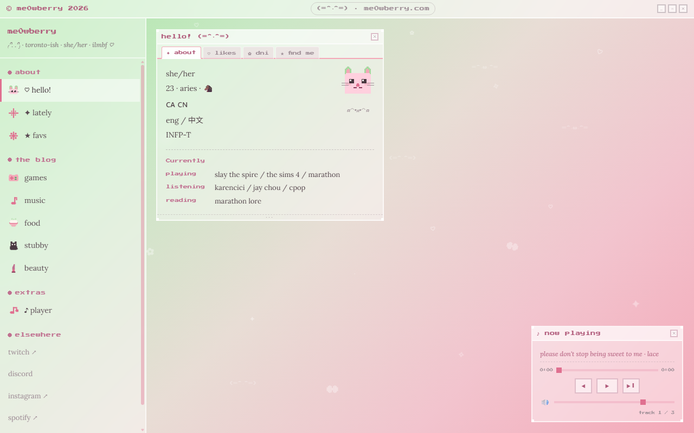
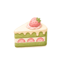
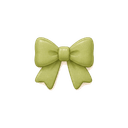
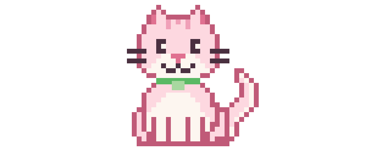
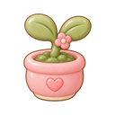
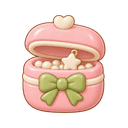
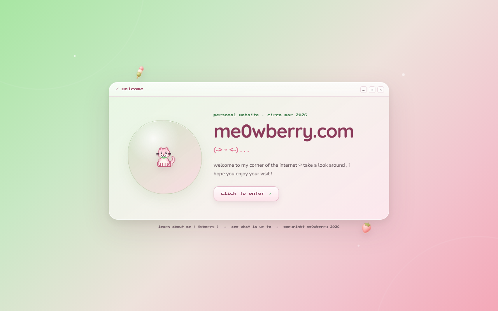

march 16 2026
first desktop
panels , player + the original pink and green gradient
the drawer for looking behind all the windows & seeing how this entire thing is being held together ( somehow ) ˖°
pick your favourite me0wberry flavour ♡

food stubby
beauty now archive
persona gallery
webgarden
trinkets shrine hallwaya few actual snapshots from the repo , from the first proper desktop to however i ended up here ♡

panels , player + the original pink and green gradient

posting moved off the public site + the gifypets had moved in

rounded chrome , foodcore icons + a bottom taskbar

welcome , now , rss , trinkets , webgarden , themes + shrines